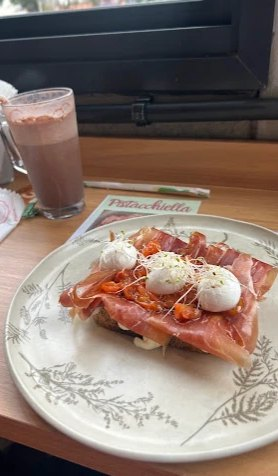

Toast especial
Quarta a domingo · 10h às 18h30
Cafés autorais, toasts generosos, brunch e doces de vitrine — num salão cheio de plantas, com ateliê botânico, em São Caetano do Sul.

Cardápio
Toasts no pão de campanha, brunch o dia todo, cafés autorais e doces que mudam com a vitrine.


O espaço
Estantes de plantas e terrários, mesas de madeira, luz quente e o neon que já virou ponto de foto. Venha para um espresso rápido ou para a tarde inteira.


Ateliê botânico
Dentro do café funciona um ateliê botânico: terrários de vidro, suculentas, vasos e plantas que enchem o salão de verde. Um cantinho para quem gosta de verde tanto quanto de café.
Novidades do ateliê no InstagramGaleria


Conte como foi a sua visita. Sua avaliação no Google ajuda mais gente a descobrir o Terrarium.
Visite
| Segunda | Fechado |
|---|---|
| Terça | Fechado |
| Quarta | 10h às 18h30 |
| Quinta | 10h às 18h30 |
| Sexta | 10h às 18h30 |
| Sábado | 10h às 18h30 |
| Domingo | 10h às 18h30 |